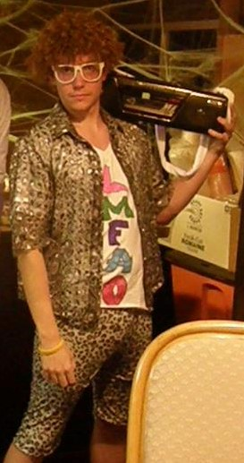

Virtual Pet
Language/Tools Used
- Java
- Gradle
- Git
- TDD
For this project, a group of four classmates and I worked together using Java, Git and TDD. We built an App capable of creating and interacting with virtual pets in various ways.

I am a software developer who lives in Columbus, Ohio. When not coding, I have a long list of hobbies I enjoy doing from going to concerts, reading, volunteering and playing rec sports.
For this project, a group of four classmates and I worked together using Java, Git and TDD. We built an App capable of creating and interacting with virtual pets in various ways.
For this project, two classmates and I worked together using Java, Git and TDD. We built an App capable of interacting with different hospital employees and having them perform different task.
For this project, I worked using HTML, CSS and Git. I built a webpage of my portfolio, describing who I am and what I have accomplished so far.
Call me, beep me if you wanna reach me, When you wanna page me, it's okay

 We're all linkedin together, Once we link, Then we are, We're all connected
We're all linkedin together, Once we link, Then we are, We're all connected